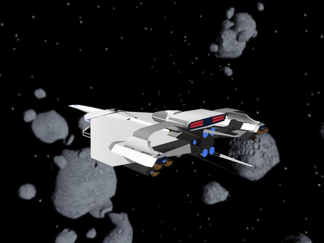

機動アイドル ミルキー・エンジェル ３
よっすぃー 作
第４章 慟哭からの離脱
１
暗黒のエーゲ海。
太陽系から約１１光年ほど離れた、宇宙空間に漂う小惑星帯の俗称である。数千万から数億とも言われる大小さまざまな小惑星がひしめくこの宙域は、ハイパードライブによる超光速航行が可能になって初めて発見された小惑星帯だ。
ここを発見したアストロノーツの一人が「まるで暗黒のエーゲ海だ」と呟いた言葉が、そのままこの宙域の俗称として定着したのである。
突然遭遇したディラング大艦隊の猛攻から逃れたシルフィードは、数度にわたる緊急のショートドライブを敢行し、この場所で束の間の安息を得ていた。
相対速度を小惑星帯と完全に同調させ、十数回にわたる監視観測を行って、初めてクルーに安堵のため息が漏れたのだ。
成り行きとはいえ、一時的に艦の運営を任されたミサキは、周囲に敵艦隊がいないことを確認すると、クルー全員をブリーティングルームに召集した。
ブリーティングルームは本来、メインスタッフが作戦等の打ち合わせに用いる会議室であり、普通の艦では平時は一般兵の食堂として使用される。しかし、巡洋艦ではあるが広報艦として存在するシルフィードでは、広報プロモの撮影スタジオかミルキー・エンジェルメンバーのお茶会会場として使用され、本来の目的で使用されることは無い……筈だった。そして召集したミサキ自身も、お茶会の主催者ならともかく、今後の艦の命運を左右するブリーティングのリーダーになるなど夢にも思ってなかった。
いつもなら姦しいほど賑やかな一室も、今日は誰も言葉を発さない。まるでお通夜の会場のようだった。
艦隊が全滅したショックから、まだ誰も癒えていないのだ。
誰も言葉を発せぬまま無為に時間だけが流れていく。壁に据付けられたデジタルクロックの表示と、空調の微かな音だけが部屋の中を重苦しく支配していた。
「ミサキ姉ぇが何か言わないと始まらないよ」
気まずい沈黙に気遣い、優希が小さく促した。
リーダーであるミサキが口を開かないことには、この場が始まらないのが明白なのだ。
「マクレガー少佐に率直に伺います。シルフィードの……艦の状況はどうなのでしょうか？」
意を決すると長い沈黙を破り、ミサキが機関長のマモル・マクレガーに質問した。
マクレガーと機関助手のハンナ・ベルベットは、機関室にいたために生き残ることが出来た、貴重な正規クルーである。両人の階級は少佐と中尉。ミサキや他のクルーたちのような「なんちゃって士官」と違い、筋金入りの職業軍人である。メインブリッジが被弾し、エバンス艦長以下、運行クルーのほとんどが殉職した今の状況では、機関長のマクレガーがシルフィードの最高官位になるはずだ。
誰もがマクレガーの発言に注目する。
「一言で言ったら最悪だな」
少し考えた後、マクレガーが包み隠さず今の状況をぶち上げた。ことこの状況で体裁を繕えばどうなるのか？ ベテランの機関士である彼には嫌と言うほど経験しているのだ。
「無理させたのでエンジンがちょっと愚図っちまってな。２番から６番エンジンまでが、オーバーヒートしてやがる」
「オーバーヒートって！」
ミサキが悲痛な顔をする。１番エンジンが生きているので、生命維持装置など最低限のシステムは稼動しているが、戦闘速度での航行やハイパードライブなどの超光速航行はまず不可能だろう。
「それじゃぁ、シルフィードは飛ぶことは出来ないのですか？」
「まてまて、飛ぶことは出来んがエンジンは故障じゃない！ オーバーヒートだと言っておるじゃろう」
「ミサキ姉、オーバーヒートはエンジンが焼きついただけだから、時間がたてば元に戻るんだよ」
ミサキのあまりの狼狽ぶりに、優希が慌てて補足を出した。
「ホントに？」
「もちろん。そりゃぁ、オーバーヒートするまでエンジンぶん回して無茶したのだから、あとで機関部の総点検は必要だけど、壊れたわけじゃないから、それほど心配はしなくて大丈夫だよ」
「優希クンがそう言うのなら信じるわ」
「なんじゃ。ワシの言うことは信用できず、優希の言葉は信じれるのか？」
おどけたようなマクレガーの言葉にどっと笑いが溢れた。それでみんなの緊張が解れたのか、やっと普通のミーティングが出来る雰囲気になった。
「優希の言う通り、オーバーヒートは放っておけば直る。後でグランドチェックは必要だろうが、今はエンジンが熱くて手がつけられん。今日いっぱい待てば目処はたつじゃろうな」
「丸、１日……も、ですか？」
再びミサキが訊き直す。
「シルフィードに積んどるオメガ融合エンジンは、本来この程度の緊急ドライブをしたくらいで焼け付くようなヤワな品物じゃない。こんな羽目になったのは、戦闘行為に及ばんじゃろうと、整備に手を抜いていたワシ等の責任じゃ」
マクレガーが済まなさそうに言う。
ホーネット級巡洋艦の動力性能は強力無比で、少々の無理はきくが、それは１回、２回の話である。追っ手がいて目的地が定まらなかったとはいえ、僅か数百光秒のショートドライブを十数回も繰り返し行えば、どんなに優秀なエンジンでも過負荷で焼き付くのも無理は無い。しかもシルフィードのエンジンは、マクレガーが言うとおり万全な整備状態ではなかった。
だがそれを誰が責められよう。７０人余りしかいないシルフィードのクルー中、航行にあたるクルーは更に少なく１０人余り。しかも機関専従は彼とハンナのたったふたりしかいないのだ。これで満足なメンテナンスなど求めるほうが酷というものだ。並みの腕なら戦闘行為どころか、エンジンを起動させることすら不可能に違いない。無事に飛ぶことが出来るのはマクレガーの実力があるからだろう。
しかし現実は容赦ない。
「時間が経てば直るといっても、今飛べないのは事実ですよね。もしここでディラングに襲われたら？」
クルーのひとりが尋ねる。
「そのときは…………一巻の終わりじゃな」
マクレガーがお手上げのポーズをとった。
予想された答え。おどけた口調で言ったが、この状況ではそんなジョークも緊迫感をあおるだけ逆効果。和みかけた空気が一気に凍りついた。
「そう心配するな。エンジンの修理が終わるまでの哨戒任務は、俺たちがちゃんとやってやるから」
場の雰囲気を察して、ニックたちパイロットが請け負った。
「そうね。ニック中尉たちなら、立派に任務を果たしてくれるわね」
クルストがなけなしの戦力を割いて派遣してくれたパイロットたち。若いがトップクラスの腕を持つことは、先ほどの戦闘で実証済みだ。
「おぃおぃ、アンタも中尉なんだろ？ 階級が一緒なんだから、畏まった口調はやめてくれ。肩が凝る」
卑屈になるミサキにニックがダメ出しをする。いくら美人でも萎縮した態度をとられるのは我慢ならないのだ。
「ご、ゴメンなさい」
「ほら、また」
２度の突っ込みにミサキが恐縮する。
「それにここはアンタらの艦だ。エンジンが直るまでは俺たちが頑張るけど、そっから先はアンタたちが頼りなんだぜ」
突き放すようにニックが言う。実際には分をわきまえているだけなのだが、ミサキの精神状態ではそこまで深読み出来る状況ではない。
「頼りって、わたしにはなんの力もないわ。ここに辿り着けたのも、ニック中尉やマクレガー少佐の力があったからよ」
「ワシはただエンジンを回しただけじゃ。それもオーバーヒートさせるような、ずさんな整備しかしとらんボンクラな機関士じゃしな」
自嘲するようにマクレガーが言う。
「永井中尉の撤退の手際は、客観的に見て水準以上の見事さだと思う。アンタはもっと自分に自信を持つんだな」
客分のパイロットたちもミサキの手際の良い指揮を評価したが、当のミサキはそうは思って無い。
「自信なんて全然ないです。それに艦長がいない今、シルフィードの最高階級はマクレガー少佐です。今後の判断は少佐に仰ぐべきです」
指揮官不在の状態から本来の姿に戻るべく、ミサキは最高官位のマクレガーに指揮権委譲を要請した。
ところが……
マクレガーから出た言葉は全く予想外のセリフだった。
「いや、階級こそ少佐だがワシは艦長の器ではない。艦長の職は永井中尉、キミがするんじゃ」
「わ、わたしが艦長!?」
その突拍子のない答えに驚いて、ミサキは自分で自分を指差す。
「そうだ」
「ムリ、ムリ、ムリ、ムリ！ 絶対に無理です！」
マクレガーの提案に、ミサキは即座に両手を振って辞退する。自分にそんな重責が務まるはずが無い。ミサキ自身はそう思っていた。
「無理でも何でも他に適任者はいないぞ。キミが艦長をやらんと、シルフィードの乗組員全てが宇宙の藻屑に消えてしまうが、それでもいいのか？」
詰め寄るようにマクレガーが言った。
口にこそ出さないが、他のクルーも同じような意見らしく、誰もがミサキを見つめている。確かにここにいるメンバーで艦長役を出来るのは、ミサキか涼子位しかいないのだ。そして涼子がミルキー・エンジェルで副長の立場である以上、艦長はミサキ以外に考えられなかった。
期待に満ちた視線。
視線。
視線。
いくつもの視線がミサキに集まった。
そのプレッシャーに、ミサキはいたたまれなくなっていた。
「少し独りにさせてくれない」
そう言うとミサキは席を立ち、ブリーティングルームを後にした。
パタン。
自動扉が閉まる音の後、嫌な沈黙が部屋一面に訪れた。
しーん…………
そんな音でも聞こえるような雰囲気を破ったのは涼子だった。
「で、キミはここで何をしているの？」
突拍子も無く優希に質問を投げかける。
穏やかな口調だが、その目は真剣だった。
「ミサキが戸惑っているのに、アナタが勇気づけてあげなくてどうするの？」
「ボクが、ですか？」
腐ってもミサキは中尉で士官。それも５つも年上である。どう考えても自分では役不足だと思うのだが、涼子の考えは違っているようだ。
「あなた以外に誰がいるの？ ミサキが本当に心を許せる相手は優希クン、あなたしかいないのよ。残念ながら私やマクレガー少佐ではダメなの。却って追いつめてしまうだけだから」
「でも……」
「でももかしこもない！ いいからさっさと行く！」
「は、はぃっ！」
まだぐずぐずする優希に一喝！
涼子の雷におののいて、優希はブリーティングルームを飛び出していった。
再び沈黙が訪れる。が、先ほどと重苦しさと違い、今度の沈黙は誰が最初のひと言を発するかでウズウズしている沈黙だった。
「素直よね。行っちゃった」
肩をすくめて涼子が言う。けしかけたという自覚がまるでない。
その言葉に他のミルキー・エンジェルたちもどっと笑った。
「おぃおぃ、こんな大事な役目を、優希なんかに任せて大丈夫なのか？」
艦載機パイロットのニックが尋ねる。優希は確かに可愛いが、それはミサキの説得に何のプラス要素もない。ことの重大さを考えると、彼らの目には役不足としか見えないのだ。
「大丈夫。ミサキ相手に優希クン以上の適任者はいないわ」
涼子が太鼓判を押す。
「ひょっとして…………ミサキ嬢って、レ……？」
「バカ言わないでよ！ 彼女が一番心を開く相手が優希クンだって言っているの！」
「俺じゃなくて？」
「誰がよ」
右頬を殴る仕草をしながら突っ込みを入れる。
「それにミサキは自分が思っている以上に、艦長の器を持っているわ」
「まぁ、それは認める。あのお嬢さん、見た目だけでなく、指揮能力も優秀だな」
ニックもその点はあっさり認めた。
「よく解っているじゃない。ミサキの状況判断力は十二分だし、人を惹きつける力、引っ張る力はワタシなんかと比べ物にならない。本来こんなところにいる人間じゃないわ」
「しかしなぁ。能力があるのは認めるが、発揮できなきゃ意味がないぞ」
「判っているわよ。彼女、あの性格だから、どうしても頼る人間が必要なの。だから優希クンに行かせたんじゃない」
また話が元に戻ってしまう。
「いやいや、それなら俺が立候補するよ」
「艦載機乗りきってのプレイボーイのあなたが？」
「評判悪いなぁ、俺って。これでも結構誠実なんだぜ」
そう言いながら、とってつけたような爽やかなポーズをとる。
「そうなの？ でもあなたではダメよ。ミサキを奮い立たせることが出来るのは優希クンだけなのよ」
絶対にね。言外に「アンタじゃ役不足」という含みが見えた。
「はっきり言われたなぁ。しょうがない、ミサキ嬢は優希に任せて、俺は涼子さんの心のケアに努めましょうか？」
「ミサキがダメなら次はワタシ？ これだから男ってのは……お呼びじゃないわよ！」
「アウチッ！」
肩を抱こうとしたマークの手をつねり、涼子もブリーティングルームを出て行った。きつい口調ながらもその表情が満更でもないのは気のせいか？
２
少人数ゆえ、他の艦と違いゆったりしている居住区でも、一際広いミサキの居室。その入り口の前で、入るか入るまいかうろうろする優希の姿があった。
その姿は傍目から見れば「彼氏」の部屋に入るか否かもじもじしている「美少女」にしか見えないが、見た目はともかく実際の優希は男であり、その姿は微笑ましい光景ではなく単なる優柔不断からきていたのであった。
「ったく、涼子さんはボクにどうしろって言うんだ？」
来たのは良いが入り口でもたもたしている。今ひとつ自主性に乏しく、状況に流されやすい優希とすれば当然の帰結。…………かも知れない。
だいたい年下の自分が説得なんか出来るはずがない。こういうの大事な用件は、親友の涼子か上官のマクレガーの仕事だろう。
やっぱり戻ろう。
そう思い回れ右をしかかった優希の脳裏に、先程の涼子の言葉が突き刺さる。
『ミサキが本当に心を許せる相手は優希クン、あなたしかいないのよ』
本当だろうか？
そりゃ確かに、ミサキとの付き合いは長いかも知れない。でも、ついさっきまで１０年近いブランクがあったわけだし、密度の濃さでいけば涼子もっとも適任だろう。
でも、そんなにブランクがあったのに、どうしてミサキ姉ぇは一瞬で見極めたのだろうか？
「入ってみなけりゃ判らないか……」
一人小さく呟くと、優希は扉に手をかけた。
「ミサキ姉ぇ。…………入るよ…………」
ミサキの了解を得ずに優希は部屋に入る。それを咎めるでもなく、部屋の隅でミサキは両足を抱え込んで小さくなっていた。
「どうしたの？ 明かりも点けずに」
「……いいの……点けなくても……」
蚊の鳴くような小さな声で呟く。
「ダメだよ。暗いままだと気持ちまで落ち込んでしまうから」
そう言って照明を点けると、たった十数分しか経っていないのに、ミサキの顔色は血の気が抜けて蒼白になっていた。
「どうせ、わたしたちは終わりなんだから」
「どうして？」
「勝てる……いえ、逃げ切れると思うの！ メインブリッジが吹き飛んで、エバンス艦長たちが殉職して、クルスト提督の艦隊が全滅したのよ！ 格好だけのわたしたちでシルフィードを動かして、地球圏に無事に行けるはず無いじゃない！」
涙声でミサキが言う。
「それもわたしが艦長？ 冗談でしょ！ わたし中尉なのよ！ 実績なんかなにも無い。ただリーダーだからって中尉の肩書きが付いただけ。そんな人間に艦長の重責なんて務まるわけ無いじゃない！」
「決め付けるなよ！」
否定するように優希が叫ぶ。
「ムリよ！ ムリなのよ……」
駄々っ子のように同じ言葉を小さく繰り返す。
「だから、どうしてムリだって言うのさ？」
「自信が無いもの」
「ミサキ姉ぇはボクを信じられない？」
ふるふると首を振る。
「そんなこと無い。優希クンは立派よ。まだ候補生なのに、もうＡ級ライセンスを所持してるし、ギルビット大尉も認めるほど上手な操艦が出来て、わたしなんかじゃ比較にならないほど凄いわよ」
「じゃあ涼子さんは？ マクレガー少佐は？ ニック大尉はどうなの？ 信じられない？」
「みんな立派よ。わたしなんか及びも付かないくらい……」
弱々しい声でミサキが言う。
確かにみんなすごいのだ。意外といえば意外だが、ミルキー・エンジェルのメンバーでなければ、涼子は艦隊旗艦の戦闘艦でＣＩＣ士官にいるほどの情報分析力を有していたし、マクレガーやニックたちの力量は言うまでも無い。
それに引き換え自分は……いったいどんな取り柄があるの？ 自身の心の問いに被る………ように優希が尋ねてくる。
「ミサキ姉ぇは、自分自身を信じられないの？」
「わたしなんかダメよ。何も無いし、何も出来ない。ただなんとなく士官学校に入って、そのまま連邦宇宙軍に入隊して、勧められるままミルキー・エンジェルになって、言われるままにリーダーに就任した……自分の意思なんてなんにも無い」
「そんなことない！」
弱気な発言をするミサキを、強い口調で優希が否定する。
そんなことない！ 絶対にない！ あり得ない！ だって……
「涼子さんから聞いたよ。ミサキ姉ぇは、士官学校じゃトップ入学トップ卒業だったんでしょ？ 生徒会長も務めて、みんなの信頼も厚くて、そんな人間がなにも無いはず無いじゃないか！」
「わたしは、他に取り柄が無いから……真面目にやっていただけ……」
「真面目なだけじゃそんなこと出来ないって！ みんなミサキ姉ぇを信じているんだから。みんなを信じられるなら、艦長の仕事だって出来るはずだよ」
「でも、艦長なんて重責を」
「大丈夫」
まだ躊躇うミサキの肩を抱き、優希はさっきより更に穏やかな口調で語りかける。
「エバンス艦長が言っていたよ。艦長の仕事で一番大事なのはクルーを信じることだって。信じるからどんな困難な状態でも命令が出せるんだって。ミサキ姉ぇはボクやみんなを信じられるだろ？ だったら出来るよ。絶対に」
「でも……」
「でも。じゃなくて、「うん」でしょ」
「でも……」
まだ躊躇するミサキ。
「んじゃ、おまじない」
そう言うと、肩を抱いたままミサキの額に唇を寄せた。
「！」
驚くミサキを尻目に優希はさっさと立ち上がり、照れ臭いのか後ろを向く。
「昔、ミサキ姉ぇがしてくれたんだよ。引っ越すときに「元気出してね」って。だから今度はボクが頑張るよ」
言ってる傍から恥ずかしさで顔が真っ赤になる。これ以上ここにいると撃沈しそうになりそうだ。
「じゃあ、ブリッジで待っているね」
顔全体を真っ赤に染めながら、優希は部屋を出ようとした。が、ドアに手をかけようとした瞬間、右肩を引っ張られて振り返ったところを柔らかいものが触れた。
「えっ!?」
直後に頬を撫でる柔らかな髪の感触と、鼻腔をくすぐる甘い香りが脳髄を直撃する。ほんの一瞬とはいえ、お互いの唇が触れたのだ。それもミサキの方から動いて。その事実に優希はどぎまぎする。
呆然としながらその場に立ちすくむ優希に、ミサキは彼の肩をぽんと叩き、笑顔で言い返す。
「お返しよ。ありがと」
まだ固まったままでいる優希を無視して、彼女はまるで何事も無かったかのように、バスルームに入り熱いシャワーを頭から浴びだした。
「みっともないところを見せちゃったせいで、お化粧がぐちゃぐちゃ。服も皺だらけだし、身だしなみをきちっとしたらブリッジに戻るわ」
「う、うん。分かった」
シャー…………
真夏のスコールのように爽快なシャワーの中から、かすかにミサキの鼻歌が聞こえてくる。時々音程が外れ「曲がりなりにもアイドルユニットのリーダーだろ！」と、つっこみを入れたくなるが、そこはグッと堪えるのが男だろう。
よかった、なんとか元気になったみたいだ。
過程はどうであれここに来た目的を果たしたと思い、優希はほっとする。
「じゃあボクはブリッジで待っているね」
そう言って部屋を出ようとした、まさにその時。
「優希クンも汗かいてたでしょ？ なんだったら一緒に入る」
不意にバスルームのドアが開き、全裸のミサキが顔を出す。たちこめる湯気の中、胸もその下もまったく無防備に、生まれたままの姿を惜しげもなく優希の前に晒したのだ。
「どわっ！ み、ミサキ姉っ！」
慌てて両手で目を塞ぐ。
染みひとつ無い陶器のような白い肌。濡れぼそった長い髪は、言いようの無い色気をたたえる。形の良い二つの膨らみから続く、ほっそりとしたラインに。さらにその下の……とにかく見たいけれど見てはいけないものを見てしまった衝撃に、優希の心拍数は間違いなく急上昇した。
「はっ、はっ、はっ、はだかー！」
「シャワーしているんだから当たり前じゃない。やーねー、昔は一緒に入っていたじゃない」
「それは子供の頃の話でしょ！ 出てくるのならなにか身に付けて！」
なに驚いているのかしら？ 優希の動揺が理解できず、ミサキはきょとんとしたまま首を傾げる。
「これでどう？」
そう良いながらバスタオルを巻きポーズをとる。確かに素っ裸ではなくなったし、大事なところは隠している。しかしボディコンのマイクロミにも見えるその巻物から伸びる健康的な長い脚、半分隠れた胸元から見える窮屈そうに並んだ半球状の豊かな膨らみは、裸以上に煽情的かも知れない。
「と、とにかく、早くブリッジに戻ってきてね」
必死の思いでわずかに残っていた理性を振り絞り、優希は逃げるようにしてミサキの部屋を後にした。
「大人ぶっているけど、やっぱり子供ね」
くすりと笑うと、クローゼットから真新しい制服を引っ張り出し、ゆっくりと袖を通した。
本人は気付いていないが、ミサキの顔からは既に緊張や焦りは消えていた。
３
ぷしゅ。
第２ブリッジのリフトドアが開き、ひとりの士官が入ってきた。腰まで届きそうな長い髪、モデルを思わせる長身。清楚で可憐ないでたちは、ミルキー・エンジェルの顔といっても差し支えなかった。
永井ミサキはブリッジに戻ってきた。
「ミサキ」
「ミサキ姉ぇ」
「リーダー」
みんなの視線が一斉に集まる。誰もが彼女の復活を望んでいた。この窮地でシルフィードを指揮することが出来るのはミサキしかいないと。そして……若干時間はかかったものの、ミサキはみんなの期待を裏切らずブリッジに戻ってきた。
ミサキは凛とした佇まいで一歩一歩踏みしめるように奥に入ると、躊躇うことなくキャプテンシートに腰掛けた。背筋を伸ばしながら周りを見回した後、一度大きく深呼吸をすると、意を決したようにゆっくりと口を開いた。
「さっきは見苦しいところを見せてしまってごめんなさい。迷惑をかけましたが、もう大丈夫です。艦長職の重責はわたしでは力不足だと思うけれど、精一杯頑張ります。だから、みんなも未熟なわたしを手伝ってください」
一言断る。
「もちろん」
優希が口火を切る。
「力いっぱいサポートする」
「一緒に頑張りましょう」
「任せておけ！」
クルーたちから次々に声がかかる。そのひとつひとつに返事をすると、毅然とした口調で号令をかけた。
「これより、地球圏に向けて航行準備を行います！ まずはマクレガー少佐を指揮官に、エンジンの修理を最優先課題とします。残りのメンバーは艦の一斉点検をお願い。地球圏到達後は連邦艦隊に合流し、参戦することになると思います。激しい戦いが予想されるので、現時点で出来る万全の整備をお願いします」
再びクルーに向かい、深々と頭を下げる。自分が引っ張るのではない、みんなを信じて動きやすい環境を作るのがわたしの仕事。優希の一言がミサキを完全に甦らせた。
「心配するな。最高の状態にチューンしてやる！」
「艦長はそこで待っていて」
「大船……と言っても巡洋艦ですけど、大丈夫ですよ」
マクレガーを筆頭に、５０人のクルーが機関室に駆け下りていく。たった１隻の巡洋艦が合流したところで、なんの戦力の足しになる？ 数字だけを見ればその通りかも知れない。しかし、連邦のアイドルの存在は、数字以上の戦力なのだ。
ミサキがお願いしてから僅か３時間でシルフィードの修理は完了した。マクレガーやニックたち以外は全て若い女性、しかも腰かけ軍人といっても良いレベルだと思っていたミルキー・エンジェルのメンバーたちだったのに、驚くほどの手際の良さでメンテナンスを完了させていった。
これはミサキのあずかり知らぬことなのだが、メンバーの多くは貴重なオフや余暇時間を利用して、資格取得に意欲を示していたのである。ただみんな非公式なので、取得したスキルと職務にミスマッチが生じて、その実力を発揮していなかったのだ。
「これより、地球圏に向けて航行を開始します。マクレガー少佐、エンジンの修理は完了していますか？」
「もちろんじゃ。完璧にチューンしておる。全開航行だろうが連続ハイパードライブだろうが、問題なく対応できるぞ」
自信満々にマクレガーが答える。
「ではマクレガー少佐、エンジン始動。沖田臨時准尉、ハイパードライブの準備をよろしく」
「承知した」
「了解！」
マクレガーと優希は同時に復唱し、修理の完了したシルフィードをハイパードライブさせた。一路地球圏に向けて。
戦いは目前に迫っていた。
第５章 艦隊決戦
１
土星軌道上に、戦艦グローリアを旗艦とする地球連邦艦隊が集結した。
小艦艇も含め、その数およそ２千隻。
かつて無い規模の大艦隊は、敵対するディラング艦隊の約３倍の陣容であった。
シルフィードからの通信を受けた軍令部は、直ちに連邦議会の緊急招集を発動し、太陽系内に常駐しているほぼ全ての艦船が、この一戦のために集結したのだ。
その遙か前方に、もう一本細い帯が広がる。太陽系深く進入したディラングの大艦隊である。
「敵艦隊の詳細なデーターがでました」
副官がレポートを持ってオニールの下に付いた。
「総数７０７隻。ソルドップ級戦艦２００、エギュール級戦艦１９５。ココロス級空母３７、他巡洋艦、駆逐艦、突撃艇からなる大艦隊です！」
声が僅かに上擦っていた。太陽系内にこれほどの大艦隊の侵入を許したのは、開戦初期の火星戦線以来の出来事である。
「シルフィードの永井中尉の報告とほぼ同じ数字だな」
使い捨てコップに注いだコーヒーを飲みながら、オニールがゆっくり答える。
「彼女の報告は非常に貴重でした。エバンス艦長以下、航行クルーの大部分と随行艦隊を喪失しながら、よくもあれだけ詳細なデーターを報告してくれたのです。ミルキー・エンジェルは我々が考えていた以上に有能だったようです」
興奮するように副官が説明する。広報以外に用途が無いと思っていた、ミルキー・エンジェルの意外な有能さに、興奮を隠せずにいた。
「それはちょっと違うな。ミルキー・エンジェルが有能なのは確かに意外だが、永井中尉に対しては以外でもなんでもない」
副官の言葉にオニールがチェックを入れる。
「と、言いますと？」
「彼女は士官学校時代から才色兼備として有名で、配属先の争奪戦は相当だったらしい。結局あの容姿と遠慮深い性格でミルキー・エンジェルのリーダーになったが、本来の実力なら参謀本部の最右翼にいるべき人材だ」
「天は二物も三物も与えたという訳ですか？」
ため息つくように副官がぼやく。残念ながら世の中は平等じゃない。そういう人物が必ずいるのだ。
「もっともそのお陰で、この短い期間でこれだけの戦力を集結できたのですから、彼女の能力に感謝しなければいけませんね」
「そういうことだ……だが、妙だ」
「妙とはどういうことです？」
オニールの呟きに副官が質問した。
「考えてもみたまえ。ディラング軍の７百を越える大艦隊は確かに脅威だが、地球の常駐艦を集めれば２千隻を越えることは、ディラング側でも当然承知しているはずだ」
副官に答えつつも自身に自問するようにオニールが口を開く。
「３倍近い戦力差ですね」
副官も頷く。
「君はそれだけの差がある相手と、なんの策も無しに戦うかね？」
「いいえ」
即座に首を振る。いくら相手が粗雑な戦術を行使したとしても、３倍もの差があれば勝つことは困難だろう。
「それが当然の選択だろう？ 国や文化が違っていても、基本的な戦術思想がそう変わるとは思わんがね」
「それを押して侵攻してくるということは……」
「何か勝てる秘策を持っている可能性も否定できない」
深く静かにオニールが断言する。
その何かが解らぬ以上、全力で叩くしかないがな。
両軍の展開が固まりだす。どちらかの艦が前進を開始すれば直ちに戦闘は始まるだろう。
そして、艦隊は動いた。
２
最初に動いたのは連邦軍だった。
「フォーメーションＡで展開。１隻たりともこれ以上の侵入を許すな！」
「フォーメーションＡ了解」
副官が復唱。グローリアを始めとする全艦隊が動き出す。フォーメーションＡは全艦が横一線に並ぶ砲雷撃戦の陣形。連邦軍の必勝戦術であった。
「ディラング艦隊、距離５千キロまで接近」
連邦艦隊がフォーメーションを形成するのに合わせるかのように、ディラング艦隊も陣形を形成しつつあった。
「ディラング側は楔陣形の四個連隊か。向こうの定石通りだな」
正面突破を是とする風潮の強いディラング皇国の艦隊は、艦隊戦の多くを楔陣形で迎える。この陣形から予想される敵艦隊の指揮官はバスツーユ中将だと思われた。交戦好きで知られる彼が指揮している以上、引くことは考えられない。相当な消耗戦は必至だ。
「３万キロまで接近したところで、前方艦隊は歓迎のミサイルを一斉発射だ」
「ミサイルを、ですか？」
怪訝な表情をして、副官が尋ねる。３万キロもの距離があれば、ミサイルが到達するまでに２０分以上の時間がかかる。ディラング側の迎撃システムが捕捉・稼働するのに十分な時間だ。
「ま、殆どは堕とされるだろうが、奴らの出鼻を挫くことは出来るだろう」
ミサイルが到達する頃には、両艦隊とも先陣艦のブラスターが有効射程距離に達している計算になる。例え全弾堕とされたとしても、敵艦隊の初動を押さえ込むことが出来るだろうと、オニールは考えていた。
「全艦ミサイル装填！」
「ミサイル装填ヨシ！」
オペレーターから次々と完了の報告が届く。
「撃て！」
オニールが命令。前方に展開している７百あまりの艦艇から、万を超える数のミサイルが打ち出された。
「ミサイル発射しました。到達まで２５００秒！」
副官が報告する。
「全軍に指令。陣形を維持したまま最大戦速で前進。有効射程距離に到達と同時に砲雷撃戦を展開する」
「全艦隊、全速前進！」
副官の復唱と同時に、連邦艦隊全ての艦艇が前進を始める。目標はディラング艦隊。絶対に負けられない一戦の火蓋が切られた。
「ブラスター最大出力で応戦。砲術仕官は目標艦の特定に集中せよ。全艦の砲撃手に伝達。指示した目標に一発でも多くのブラスターを命中させろ」
オニールの檄が飛ぶ。
「敵ソルドップ級戦艦、２隻轟沈。エギール級戦艦、大破１に中破１７を確認。敵艦隊の損耗率は４パーセントです」
「我が艦隊の方はどうか？」
「イノセント、サフラン他、４隻が轟沈。足利他、大破による戦闘能力喪失艦が７隻。損耗率は２パーセントといったところです」
オニールの質問に副官が答える。
「あまり良くないな」
小さく呟く。
率にすれば連邦軍の方がまだ優勢だが、量に換算すればディラング側は、互角以上に戦っている計算になる。何が理由かは不明だが、ディラング側の士気は、相当高いと判断できる。
「Ｒ１７ポイントに第１１艦隊を投入、戦線を維持。Ｆ４ポイントに火線をもっと集中しろと指示」
「第７艦隊は使わないのですか？」
まだ投入していない第７艦隊の運用について副官が尋ねる。連邦宇宙軍最強を誇る第７艦隊は、初弾のミサイルを撃った後、後方に控えたまま待機しているのだ。
「胸騒ぎがするのだ」
「胸騒ぎというと？」
「君はディラング艦隊の士気の高さをどう見る？ 私は単なる力押しとは思わないがね」
「総力戦。と、見ていますが」
「そう、確かに総力戦だ。が、敵艦隊を一掃するだけの我々と違い、ディラング側はこの一戦の後、地球掃討戦が控えているはずだ。なのに奴らは一切の予備戦力を温存せず、目の前の我々に全勢力を割いている」
「確かに妙ですね」
副官もオニールの危惧に気が付いた。
仮に今この一戦に勝利したとしても、全戦力が疲弊してしまっては、ディラング側に勝利はない。後の一戦のことを考えると、予備戦力の温存は必要不可欠の筈だ。
「バスツーユほどの大物が、目先の功に焦って後先考えない戦いを挑むとは考え難い。もしこの一戦に随行全艦隊を投入するのなら、地球掃討のための艦隊を別に隠していると考える方が自然ですね」
「その真意がはっきりしないことには、第７艦隊を投入するのは躊躇うのだ」
オニールが危惧する胸の内を告げた。
そしてその危惧は杞憂ではなかった。
宇宙が揺れた。
３
「ディラング艦隊後方２千キロに重力波反応！ ドライブアウトします！」
超空間探査オペレーターのひとりが叫ぶ。
「艦隊の増援か？」
副官が釈明を要求した。
「重力波の波形から艦数は１です。ですが……こんな……信じられない！」
オペレーターが絶句する。
「意味不明な言葉を言うな！ 具体的に報告せよ！」
「ドライブアウトする艦の全長が１０キロを越えています。とんでもないサイズの超大型の戦艦です！」
オペレーターが報告するとほぼ同時に、遙か前方の宇宙空間が揺らぎ、超巨大戦艦が禍々しいその姿を実体化させた。
「なっ！」
副官を始め、参謀やグローリアに詰めるブリッジクルーの全員が、スクリーンを凝視したまま息を飲む。
とんでもない。
その一言以外に言い表す言葉が出てこない。それほどディラングの超巨大戦艦は、常識を凌駕していた。
禍々しいその艦体にはハリネズミのように無数の砲塔が配備され、その一基一基が通常サイズの大型戦艦の主砲級という凄まじさであり、その巨大さから来るな威容に、ブリッジが霞んで見えなかった。装甲の厚さも容易に想像が出来、並みの砲撃ではびくともしない堅牢さが視覚でも明らかだった。
「でっ、でかい……」
「勝てるのか？ あんな巨大な艦に？」
「奴らはあんな大質量戦艦をハイパードライブできる、オメガ融合エンジンの開発に成功したのか？」
「ディラングが総攻撃をかけるのは、あの秘密兵器があったからか？」
「勝てるわけ無い！」
不安が声となって現れる。それは小波のように連邦艦隊全艦に広がっていった。
見えない何かが士気の低下という形になり、砲撃の命中精度が一気に落ちる。目の前で僚艦が四散した艦艇の中には前線から後退するものまで出る始末だった。
それは旗艦グローリアのブリッジでも同様だった。
圧倒的な威容にブリッジクルーが飲み込まれ、一時的にだが機能不全にまで陥ったのだ。
「狼狽えるな！！」
騒然となるブリッジでオニールが一喝した。
「ディラング側の技術水準も我々とそう大差はない。確証は無いが、恐らく数十から数百のオメガ融合エンジンを同期させて、ハイパードライブを実現させているのだろう」
「なるほど。それなら可能かもしれない」
技術参謀の一人が同意した。
いかに高性能なオメガ融合エンジンといえども、ハイパードライブが可能な艦船のサイズは二千メートル程度が限度とされている。ディラングのソルドップ級や、連邦旗艦のグローリアクラスがそれに該当する。
が、目の前に対峙する戦艦は、それらの常識を根底から覆す程の巨大さだった。その大きさはもはや戦艦と呼ぶよりも、小規模な要塞と呼んだ方が相応しいのかもしれない。恐らく数百に及ぶオメガ融合エンジンを、大規模な演算装置で同期させて航行しているのだろう。
そもそもハイパードライブの航路決定には膨大な計算が必要だ。何百ものエンジンを同期させようと思えば、スーパーコンピューターでもそれなりの時間が必要である。それ故に先陣艦隊から到着が大きく遅れたに違いない。オニールはそう分析した。
「しかし、あれ程の超巨大戦艦を……」
参謀の幾人かはまだうろたえている。戦力的にはたかが１艦加わっただけなのだが、その１艦が想像を絶するサイズ故に、物量以上の恐怖感を感じているのだ。
「それこそ奴らの狙いだ！」
オニールが消沈する参謀連中を叱責し、言葉を続ける。
「大きかろうがなんだろうが、敵であることには間違いない。大きければ目標も当てやすいだろう？ 第７艦隊を前に出せ！ 各個撃破、殲滅せよ！」
虎の子の第７艦隊がついに出撃を開始した。
「絶対にあの超巨大戦艦をこれ以上侵入させてはならない！ 第七艦隊の誇りにかけても、目前の敵は殲滅させろ！」
第七艦隊の司令官ハンス・モールトは、指揮下の艦船六十隻に激を飛ばした。
見かけだけのでかいやつ。
それが彼の目に映った超巨大戦艦の印象だった。歴戦の兵であるモールトとは、軍令部付きの参謀と違い、戦艦は戦艦としてしか見ていなかった。
あれだけのサイズだ。確かに装甲は、並みの戦艦の比ではないかも知れない。だがこちらにも奥の手がある。モールトは冷静に作戦の開始時期を窺っていた。
「まずは露払いの随行艦隊を排除しないといけませんな」
参謀のキールが具申する。超巨大戦艦の周りには、まるで土星の輪のように小型艦艇が張り付いていた。巨大ゆえに機敏な動きに難のある戦艦の懐に、敵艦艇の侵入を防ぐようにするためであろう。
ふたりの意見は一致した。
「その通りだ！ まず外縁の雑魚どもを排除する。全艦、撃てっ！」
モールトの命令以下、第７艦隊の所属艦６０隻、全ての主砲が火を噴いた。
「高熱源反応！ 敵艦隊もブラスターを発砲しました！」
ＣＩＣ士官が叫ぶ。
「チャフ展開！ ブラスターの輝軸をずらすんだ！」
前衛の艦からビーム撹乱物質が散布され、敵艦隊ブラスターの集中砲火を弾く。無数のブラスターが飛び交う中を精鋭の第七艦隊は、敵ののど元にじりじりと肉薄しつつあった。
「敵超巨大戦艦、射程に入ります」
距離カウンターが有効射程距離を示す。
「全砲門を収束しろ。あのでかぶつに風穴を開けるんだ！」
密集隊形を取りつつ艦隊全艦の主砲の基軸が揃えられる。第７艦隊が得意とする一転集中攻撃である。
砲撃位置を揃え、敵旗艦ただ１艦のみを狙い集中攻撃で頭を叩き潰す。高い練度と卓越した艦隊運用で、これまでも幾度となく勝利を収めてきた戦法である。
照準を揃え、一斉にブラスターを放とうとした刹那。
「敵艦から攻撃！」
叫ぶ間も無くフロントスクリーンが超新星のような閃光でホワイトアウトし、立っていられないような振動がブリッジを襲った。計器が吹っ飛び、エマージェンシー表示がどこもかしこも点灯する中、モールト自身も座席から振り落とされ、フロアに全身叩きつけられた。
「ダメージリポート！」
時間にして数秒？ 数分？ 数時間？
自身の意識まで吹き飛んだモールトだったが、気丈に立ち上がると激痛に呻きながらも被害状況を尋ねる。
ブリッジクルーの大半が、モールト同様軽い脳震盪に襲われ意識を失っていた。
「意識をしっかり持て！ 戦闘中だということを忘れるな！」
まだ意識が朦朧としているクルーの頬を叩き、叱咤激励する。
意識が戻ったクルーたちが直ちにダメージチェック開始する。いくつかの機器は既に使用不能になっており、ある程度のダメージは予測できた。しかしスキャンが進むにつれて、彼らの予想を遥かに上回っていたことに愕然となった。
「動力部に致命的な支障！ 第１、第２、第４主砲沈黙。エンジン出力低下により航行機能喪失！ 僚艦の連絡も入りました。第七艦隊の７０パーセントが撃沈またはＤプラス以上の大破。戦闘能力は１０パーセントを切っています！」
ＣＩＣ士官が悲痛な叫びで報告する。
バカな！ 信じられない。
モールトは我が耳を疑った。いくら相手が１０キロを超えるような超巨大戦艦とはいえ、連邦軍最強とまで言われた第七艦隊を、この短時間で事実上崩壊させたのだ。そんなことを認めるわけにはいかない。
「もう一度チェックだ」
ダメージチェックを再度行わさせる。しかし、得られた回答は同じだった。
背筋に凍るものを感じた。
見かけだけではない。圧倒的な攻撃力と、何者をも寄せ付けない堅牢な装甲が備わった
「敵超巨大戦艦、進攻を開始しました。予想進路、本艦と交差します！」
「砲撃可能な艦は再度照準を合わせろ。撃沈まではいかなくても、ダメージを与えるんだ！」
それがモールトの発した最後の言葉だった。
その僅か数分後には、第７艦隊の存在自体が宇宙の塵と化していた。たった１隻の戦艦の攻撃によって。
「第７艦隊が全滅？」
第一報を聞いてオニールは我が耳を疑った。連邦艦隊でも随一の攻撃力を誇る第７艦隊が。である。
「信じられません。が、事実です」
報告した参謀自身も呆然としていた。
「判っている」
信じられないとはいえモニターを見れば判る。が、判るのと理解できるのは別物だ。
いくら相手が聞きしに勝る超巨大戦艦とはいえ、たった１隻の戦闘艦に６０余の艦隊が葬り去られるのど、予想も付かない事態なのだ。
「敵超巨大戦艦。進軍を開始しました。さらに巡洋艦キリマンジャロとアステカが沈没！戦闘能力が０・０３パーセント低下しました」
合わせて１５パーセントの損耗率！
艦数の絶対量から言えば、まだまだ連邦軍のほうが圧倒的優位だ。しかし第７艦隊を失った動揺、さらにあの超巨大戦艦のもつ威圧力。その目に見えないプレッシャーによって、連邦艦隊は精神的劣勢に立たされていた。
それはここで作戦を立案すべき参謀連中も同様だった。彼らは非常に優秀な成績で士官学校を卒業し、幾千にも及ぶシミュレーションをこなして来た猛者である。が、それはあくまでも机上での話であり、実際の戦闘では前線の指揮官の力量に負うところがほとんどなのだ。
今、ディラングによる前代未聞な作戦に、参謀を始め各艦の艦長たちも完全に翻弄されている。このままでは優位なはずの戦力差もひっくり返され、心理面だけでなく数字上でも劣勢に陥ってしまうだろう。
そうなれば本当に勝ち目はなくなる。
どうする？
オニールは思案した。その答えはすぐには出てこない。
４
太陽系外縁に到達したシルフィードのブリッジは、連邦艦隊の劣勢を見て騒然としていた。
「なんなんだ！ あのデカ物は！」
ブリッジに顔を出していたニックが、クルー全ての代弁をした。ディラング軍の超巨大戦艦の持つ威圧感は圧倒的だった。
予期せぬ敵艦隊の遭遇から、命からがら逃げ延びたシルフィードだったが、マクレガーたちの懸命の修理により、どうにかここまで戻ることが出来たのである。
「あの時の反応とぴたり一致しますね」
冷静に優希が分析する。
暗黒のエーゲ海に逃げ込むべく敢行した、最後のハイパードライブ直前に感知した大質量物体が、恐らくあの超巨大戦艦だろう。
ただ予想とはるかに違ったのが、その超巨大戦艦のもたらす影響力である。
連邦軍にしてみたら、ドライブアウトしてきたのが戦艦百隻の方が、まだ戦いやすかったのではないだろうか？ その禍々しい威圧感に萎縮してしまい、実力以下の力しか出せていないのだ。反対に、絶対的な象徴として繰り出したディラング側は、物量的劣勢を跳ね除けるだけの心理的優位に立っていた。
「しかし、このままではいくら連邦の方が物量的に勝っているといっても、ディラング側に圧倒されてしまうぞ」
優希の懸念に同調し、パイロットのシンも危惧する。いや既にそれは危惧ではなく、現象は目で見える現実のものになっていた。
「大まかだけど、両艦隊の戦力比が出たわ」
ＣＩＣに詰めていた涼子がデーターを持ってきた。
「会戦当初は連邦のディラングの戦力差は、およそ１対３。ところがあの戦艦の出現以降、連邦とディラングの損耗率が桁違いに変わってしまい、今では１対２まで差が詰まっています」
「と、言うことは……」
ミサキが尋ねる。
「このまま戦闘を続ければシン中尉の言う通り、戦力比は逆転。そうなれば連邦に勝ち目はなくなるわ」
持っていたデーターを見せて冷徹に答える。
「そんな……」
「でも、これは事実よ」
スクリーンに映る超巨大戦艦がそれを肯定していた。
要塞といってもいい巨大な艦に、ハリネズミのように突き出した無数の砲門。そこから繰り出される大出力のブラスターは連邦艦隊を寄せ付けず、その膨大なエネルギーで近寄る艦を確実に屠っていた。
また一隻、連邦の駆逐艦が宇宙の塵と化してしまった。
「で、どうする？」
同じくブリッジにいたマクレガーが尋ねる。
「このままのこのこ参戦しても、さっきの駆逐艦と同じ運命じゃ。クルスト提督はそんなことを望んでいないじゃろう」
もっともな答えだ。身を挺して自分たちを逃がしてくれたクルスト提督のためにも、絶対に勝って報いなければいけない。
でも、どうやって？
「シルフィードの火力は、巡洋艦としてそれ程充実しているわけじゃないわ」
反芻するようにミサキが呟く。
「本来ホーネット級巡洋艦は、持ち前の機動性で敵艦隊をかく乱するために開発されたからね」
涼子が後を引き継いだ。
「砲雷撃戦のようなノーガードの殴り合いには向いておらん」
マクレガーが言い切った。
確かにその通りかもしれない。ではどうすればいい？ 機動力を活かしつつ、効果的な一撃を与える方法。ブリッジにいる全員が黙り込んだ。
もちろん優希も考え込む。
既存の主砲。いや、ダメだ。シルフィードの主砲では、牽制程度の威力しか期待できない。もっと強力な火力。例えば夢で見たようなエンジンを直接ぶつけるくらいの。
……
…………
………………
！！！
まてよ。
エンジンを直接ぶつけるのは突飛だが、エンジンの全エネルギーを直接ビームとして撃ち込むのはどうだろうか？ オメガ融合エンジンの強力無比な出力なら、あるいは可能かもしれない。
しかしそんな強力なエネルギーの放出は、主砲の砲身ではもたない。アイデアの実現にはもっと大きな砲身が要る。そう、フライトデッキくらいの。
フライトデッキ！！！！
「出来ます！ 必殺の攻撃が、シルフィードで！」
思わず優希は叫んでいた。
□ 感想はこちらに □